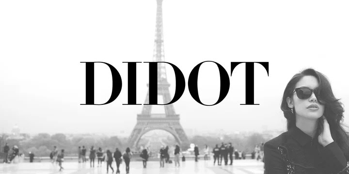
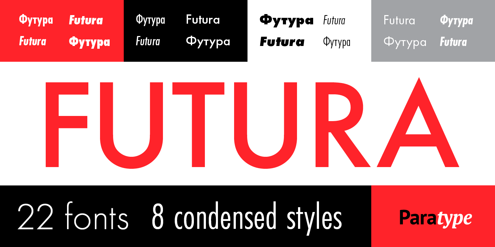
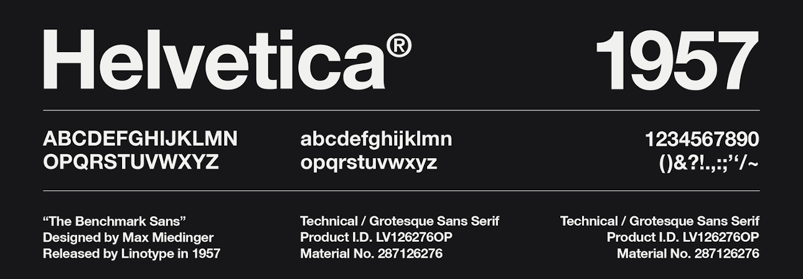
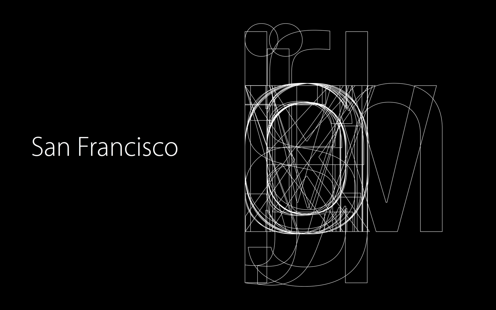

Typeface
The words every designer uses for type, the main families of typeface, and eleven typefaces that changed what type could say.
What we'll cover
- Typeface, font and typography
- The main classifications: serif, sans-serif, display and more
- Eleven typefaces, from Blackletter to San Francisco
- Choosing type on purpose
Use the arrow keys, space or click to move through the slides. Press F for full screen and Esc to come back here.
Typeface
Type sets the tone before anyone reads a word.
Know the words
- Typeface The design of the letters: Helvetica
- Font One version of it: Helvetica Bold 16 px
- Font family All the weights and styles: light, regular, bold, italic…
- Typography The practice of arranging type: size, spacing, layout
- Hierarchy The visual ranking of text: H1 › H2 › body › caption
The main families
- Serif Small strokes at the ends of letters. Traditional, readable in print
- Sans-serif No serifs, clean lines. Neutral and modern: the language of UI
- Display Expressive and decorative. Headlines and logos only
- Script Imitates handwriting. Personal, elegant, hard to read at length
- Monospaced Every letter the same width. Code and technical text
- Blackletter Dense medieval strokes. Historic and ceremonial
Eleven typefaces
From the medieval scriptorium to the phone in your pocket.
Gothic (Blackletter)
Medieval Europe, 1100s onwards. Gutenberg used it for the first printed books.
Says tradition and ceremony: diplomas, beer labels, heavy metal.
Keep it for logos, never for interface text.

Garamond
France, 1530s. The classic old-style serif, made for books.
Moderate contrast and open shapes make it comfortable for long reading.
Says knowledge and tradition.

Didot
France, around 1784–1811. A "modern" serif with extreme contrast and hairline serifs.
Says luxury and fashion: think magazine covers.
Use it large; the hairlines vanish at small sizes.

Caslon Egyptian
England, 1816. One of the first sans-serifs ever made.
Blunt and practical, built for posters and signs in the Industrial Revolution.
Critics called sans-serifs "grotesque". The name stuck.

Futura
Germany, 1927. A geometric sans built from circles, triangles and squares.
Says progress and confidence. It went to the Moon on the Apollo 11 plaque.
Great for headlines, tiring for long text.

Times New Roman
UK, 1931. Designed for The Times newspaper: narrow letters that save space and stay readable.
Says authority and credibility, but as an old default it can look unconsidered.

Helvetica
Switzerland, 1957. The neo-grotesque designed to be neutral, letting the message speak.
Defined Swiss Style and decades of corporate logos.
Its closed shapes are harder to read at small sizes on screen.

Roboto
Google, 2011. The system font of Android and Material Design.
Neutral, readable and free: a safe default for UI.
So common that it gives a product little personality.

San Francisco
Apple, 2015. Replaced Helvetica Neue across Apple's systems.
Has optical sizes, Text and Display, tuned for small and large type on screen.
Use it to make iOS designs feel native.

Google Sans
Google, 2015. Grew out of Product Sans, drawn for the new Google logo.
A friendly geometric sans that carries the brand into Google's apps.
Comic Sans
Microsoft, 1994. Designed by Vincent Connare for friendly speech bubbles on screen.
Used everywhere it didn't belong, it became the world's most mocked font.
The lesson: a typeface is only right or wrong for its context.

Choose type on purpose: for your users, your brand and the job the words have to do.
Match the typeface
Which of the eleven would you choose for each, and why?
- A luxury perfume brand's magazine advert
- A long-read news app
- A banking app that should feel native on iPhone
- A heavy metal festival poster
- A space tourism start-up's logo
- A simple Android utility app
One good answer
- Didot: luxury and elegance at large sizes
- Times New Roman or Garamond: comfortable long reading
- San Francisco: native, clear and trusted on iOS
- Gothic (Blackletter): dark, dramatic and historic
- Futura: progress and confidence, and it went to the Moon
- Roboto: neutral and native on Android
There's more than one right answer. What matters is your reason.